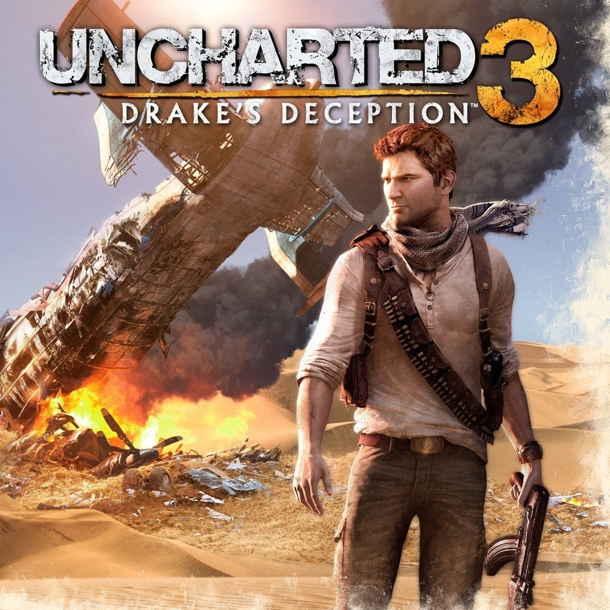

Select A Uncharted!
Select A Game Down Below!
Summary
"Uncharted 3: Drake's Deception" is the third installment in the Uncharted series, developed by Naughty Dog. The game continues the adventures of treasure hunter Nathan Drake as he searches for the legendary lost city of Ubar, also known as the Atlantis of the Sands. Alongside his mentor Victor Sullivan and longtime partner Elena Fisher, Drake embarks on a globe-trotting journey that takes him from the streets of London to the deserts of the Arabian Peninsula. As Drake unravels the mystery of Ubar, he must confront his own past and face off against a shadowy organization led by the enigmatic Katherine Marlowe. The game features intense action sequences, intricate puzzles, and breathtaking set pieces, all wrapped in a compelling narrative that explores themes of friendship, loyalty, and deception. "Drake's Deception" received widespread acclaim for its captivating storytelling, engaging gameplay, and stunning visuals, further solidifying the Uncharted series as one of the most beloved franchises in gaming.
More Detail
"Uncharted 3: Drake's Deception" takes players on another exhilarating adventure with Nathan Drake, filled with twists, turns, and heart-pounding action. Here's a deeper dive into the game: Plot: The story begins with Nathan Drake and Victor Sullivan attempting to steal a priceless artifact from a museum in London. The artifact leads them on a quest to find the lost city of Ubar, which is said to contain untold riches. Along the way, Drake discovers that the search for Ubar is intertwined with his own family history, particularly the legacy of Sir Francis Drake. As Drake delves deeper into the mystery, he must confront his own doubts and fears while facing off against a formidable adversary, Katherine Marlowe, a cunning and ruthless antiquities dealer who will stop at nothing to achieve her goals. Gameplay: "Drake's Deception" builds upon the gameplay mechanics established in previous installments while introducing new features to keep the experience fresh. Players engage in a combination of exploration, platforming, puzzle-solving, and third-person shooting as they traverse a variety of stunning environments, from bustling cities to ancient ruins. The game introduces new mechanics such as enhanced melee combat, dynamic environmental interactions, and improved stealth gameplay, adding depth and variety to the gameplay experience. Characters: The game features a rich cast of characters, each with their own motivations and conflicts. Nathan Drake continues to be the charismatic and resourceful protagonist, grappling with his past and the consequences of his actions. Victor Sullivan, or Sully, serves as Drake's trusted mentor and friend, offering guidance and support throughout the journey. Elena Fisher returns as Drake's love interest, providing a moral compass and emotional anchor. New characters like Katherine Marlowe and her henchman Talbot add depth to the story, serving as formidable adversaries for Drake to overcome. Themes: "Drake's Deception" explores themes of deception, betrayal, and the search for identity. The game delves into Drake's past, shedding light on his relationship with Sir Francis Drake and the truth behind his family history. As Drake uncovers the secrets of Ubar, he must navigate a web of lies and deceit, confronting his own doubts and insecurities along the way. The game also examines the consequences of obsession and the lengths people will go to in pursuit of power and wealth. Visuals and Presentation: As with previous entries in the series, "Drake's Deception" boasts stunning visuals and cinematic presentation. The game features breathtaking environments, detailed character models, and seamless transitions between gameplay and cutscenes. The narrative unfolds through a series of epic set pieces and scripted sequences, immersing players in a thrilling adventure that feels like a Hollywood blockbuster. Legacy: "Uncharted 3: Drake's Deception" received widespread critical acclaim upon its release, praised for its compelling storyline, engaging gameplay, and cinematic presentation. The game won numerous awards, including several Game of the Year accolades, and further solidified the Uncharted series as a pinnacle of storytelling in gaming. Its success paved the way for future installments in the franchise and cemented Naughty Dog's reputation as one of the premier developers in the industry.